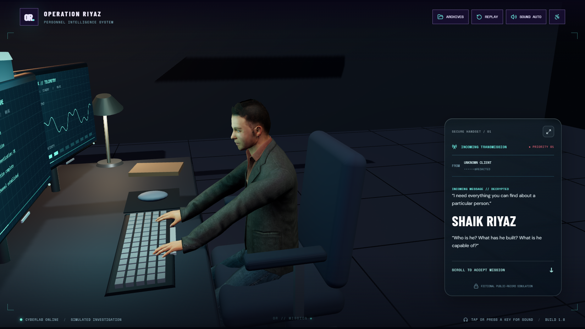
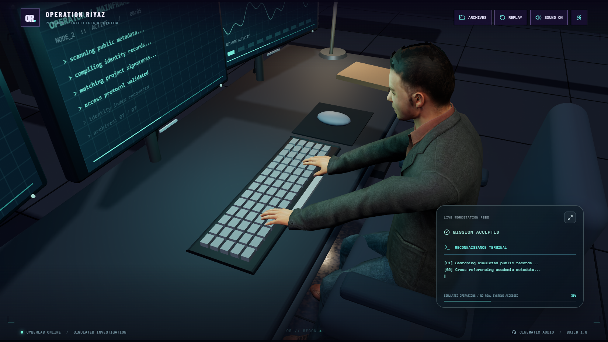
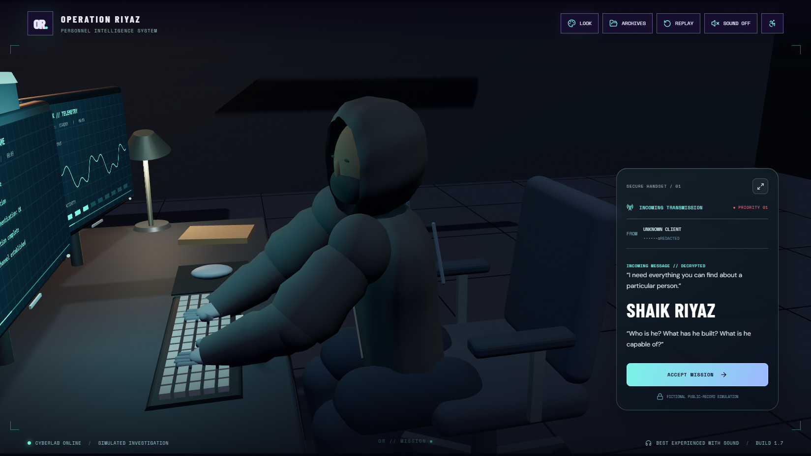
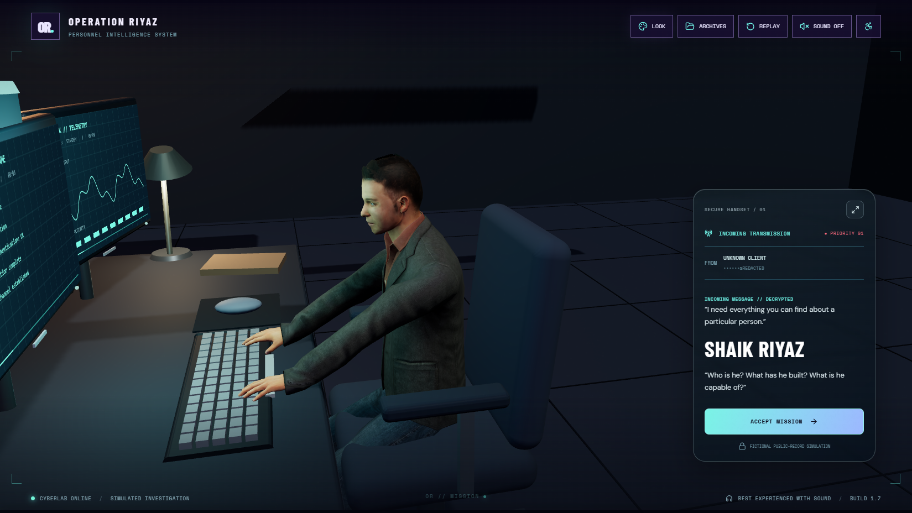
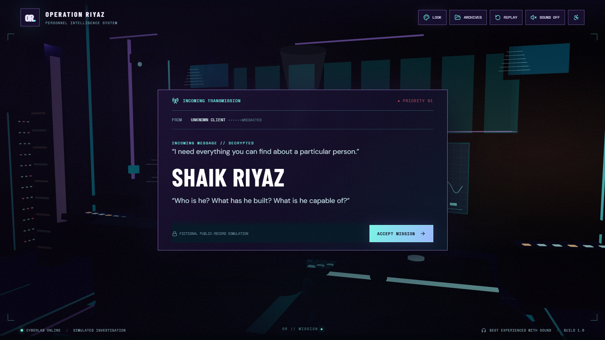
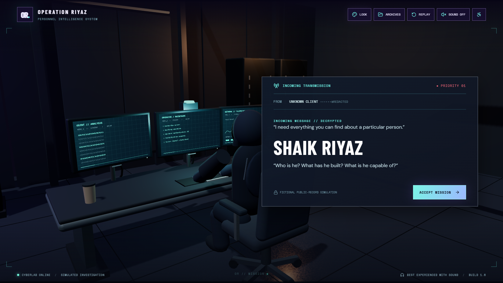

Operation Riyaz / v1.6 → v1.7Cinematic technical review
Current audio fix · v1.8.1
The incoming transmission now has an Accept Mission button that enables sound and starts the mission together. Your supplied MP3 plays at system breach, with enough scene time for the entire recording. Scroll and swipe acceptance remain available.
Audio fix and verification
Current v1.8 · scroll-driven story
Verified: 27 regression tests, production build, asset checks, production Chrome flow and unclipped audio render all passed. Current verification results.
The intro action buttons are removed. Scroll to the incoming transmission, scroll again to accept the mission and reveal the profile, then scroll into the seven archives. Neon Nocturne is fixed. Sound attempts automatic playback, with a first-gesture fallback when browser policy requires it.
Incoming transmission · scroll to accept
Mission accepted · automatic investigation
Scroll behavior and verification · Listen to the cinematic alert
Human replacement update: a textured, rigged Microsoft Rocketbox character replaces the cartoon operator. Read the model and verification details.
Before · procedural cartoon operator
Current · textured rigged human
Latest revision captured in Chrome: front three-quarter coverage, a keyboard insert, a compact translucent handset and an expandable live log. The earlier human replacement pass verified 24 interaction checks across five viewport sizes; its story case passed on rerun after a development preview reload. Production build, asset validation and the production Chrome smoke check also passed.
Actual Chrome screenshots, captured at 1649 × 928. The supplied source was v1.6. These comparisons show that baseline and the current v1.7 corrections. Click an image for its original resolution.
Review & changed files · Current verification summary · Production build log · Production browser check
The five largest baseline shortcomings
- Environment: dark surfaces and repeated illuminated lines obscured construction, materials and contact. Consolidated geometry and motivated lighting restore those cues.
- Camera: the title/message hid the investigator; the reconnaissance close-up was dominated by the back of the head. Compositions now reserve space for the physical action and text.
- Operator: broad arm swings did not maintain keyboard contact. Two-bone solving anchors the wrists and produces separate shoulder, elbow and hand motion.
- Holograms: independent WebGL and HTML folder wheels overlapped; labels could turn upside down. A single upright orbit now supplies the readable interaction layer.
- Continuity: an opening file was a temporary duplicate, while the other files and portrait stayed put. The actual elements now move into their final layout; interrupted navigation cancels completion.
Establishing the laboratory
The workstation is separated from the title. Floor seams, desk edges and contact shadows establish physical scale.
Incoming transmission
A front three-quarter shot shows the operator at the keyboard. The incoming message occupies a 330px translucent handset and expands on demand.
Before · supplied v1.6
Scene pass · before human replacement
Your latest feedback: message footprint
Interim v1.7 versus this revision: the large opaque message has become a compact, expandable handset. The camera now shows the front of the operator.
Before · interim v1.7
After · compact transparent handset Expanded message screenshot · Operator response shot
Investigation
A dedicated close insert exposes the keyboard and arm reach, followed by an operator response cut. Monitor supports, cable routing and desk hardware are visible.
Breach response
The room remains visible during the warning; the impact is brief and camera shake decays.
Identity reconstruction
One portrait rises from the actual workstation. The old overlapping wheels and duplicate portraits are removed.
Spatial archive
Seven upright cards share a world-space orbit and keep their front-to-back arrangement.
Opening a dossier
The actual file moves and expands while the other files and portrait move toward the directory.
Readable portfolio
The original content and seven-folder navigation remain intact.